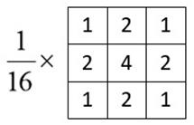
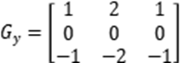
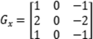
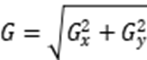
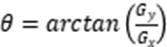
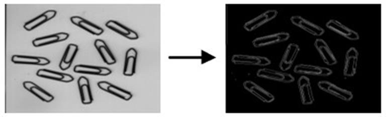

|
类型 |
滤波 |
|
描述 |
Canny边缘检测，其步骤如下所示： 1.使用高斯滤波，消除噪声，举例为3*3的高斯内核  2.计算梯度幅值和方向 用sobel算子在x和y方向求图像梯度   使用下面公式计算梯度的幅值和方向   梯度方向一般取值为：0°，45°，90°，135° 3.非极大值抑制 这一步排除非边缘像素，仅仅保留了一些细线条（候选边缘） 4.滞后阈值： Canny使用了滞后阈值（高阈值和低阈值）： 若某一像素位置的幅值超过高阈值，该像素被保留为边缘像素。 若某一像素位置的幅值小于低阈值，该像素被排除。 若某一像素位置的幅值在两个阈值之间，该像素仅仅在连接到一个高于高阈值的像素时被保留。
别名：ZV_Canny |
|
语法 |
ZV_ImpCanny(src,dst,thresh1,thresh2,size)
参数： src：ZVOBJECT类型，源图像为单通道或三通道图像 dst：ZVOBJECT类型，边缘图像 thresh1：低阈值 thresh2：高阈值，大于thresh1 size：滤波器尺寸，范围[3，7]，奇数 |
|
适用控制器 |
支持ZV功能或者5系列以上的控制器 |
|
例子 |
 ZVOBJECT src,dst ZV_ImgRead(src,"edge.png",0) '以原图像格式读取图片 ZV_ImpCanny(src,dst,10,200,3) '3*3 滤波尺寸，Canny边缘检测 |